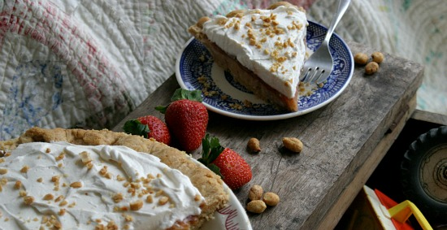

Peanut Butter and Jelly Pie

Home
Description
This is a recipe from Seattle's High 5 Pie, a pie shop that used
to be in the Capitol Hill neighborhood. I remember going there
after soccer practice with my mom and best friend. YUM!
The peanut butter layer has a rich, but not too sweet mixture
of peanut butter, cream cheese, sugar, milk, honey and a pinch
of salt. Then for the jelly layer, I simply used store bought
strawberry jelly, but I think homemade jam or jelly would be amazing.
And then it's topped with fresh whipping cream and a handful of
chopped peanuts.
Ingredients
- pie crust, single
- 8 oz cream cheese
- 2/3 cup peanut butter
- 1/2 cup sugar
- 2 tablespoons milk
- 1 tablespoon honey
- pinch of salt
- 3/4 cup jelly, your fav flavor
- 1 cup heavy cream
- 1/2 teaspoon vanilla
- 2-4 tablespoons powdered sugar
- peanuts and fruit for garnish, optional
Steps
- In a large bowl, cream together peanut butter,
cream cheese, sugar, milk, honey and salt until
well combined
- Spoon into crust and spread evenly
- Add jelly to small bowl, and mix with a spoon or
fork slightly to make it easier to spread
- Add to peanut butter layer and spread evenly
- Add cold heavy whipping cream to a large chilled bowl
and beat on medium speed until cream begins to thicken
- Add vanilla and turn mixture to high, continue beating
on high speed until cream thickens
- Gradually add powdered sugar until cream forms stiff peaks
- Generously spoon onto jelly layer
- Top with chopped peanuts and/or fruit